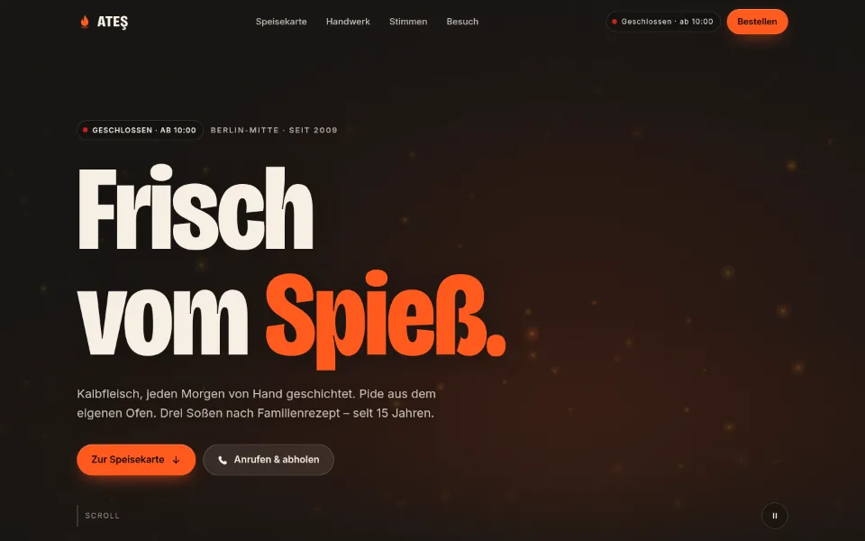
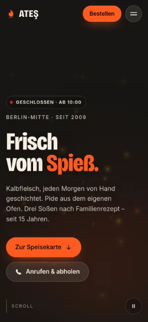

Case Study 07 / 30 · Gastronomie & Hotel
ATEŞ Döner & Grill
Dönerladen-Demo mit Hintergrundvideo-Konzept, Glut-Animation als Fallback und Live-Öffnungsstatus.


Demo mit erfundenem Betrieb. Bewertungen, Kennzahlen, Adresse und Telefon sind Platzhalter; ein Video liegt im Ordner noch nicht, die Seite zeigt den Glut-Fallback.
Ausgangslage
ATEŞ Döner & Grill ist ein erfundener Dönerladen in Berlin-Mitte, Musterstraße 12. Gäste eines solchen Ladens wollen die Karte, wissen, ob gerade offen ist, und mit einem Tipp anrufen oder die Route starten. Die Demo zeigt, wie eine Seite dafür mit Video im Hero aussehen kann, ohne dass das Video schon da sein muss.
Idee
Kohle-Schwarz und Creme wechseln sich abschnittsweise ab, Feuer-Orange und Safran setzen Akzente, Bricolage Grotesque gibt den Überschriften Kante. Im Hero läuft ein stummes Video, in dem der Besitzer Fleisch am Spieß schneidet; die Schlagzeile „Frisch vom Spieß.“ wird beim Laden von einer leuchtenden Messerkante freigelegt. Solange kein Video liegt, glimmt eine animierte Glut auf einem Canvas.
Was die Seite kann
- Hero-VideoLegst du hero.mp4 (optional hero-mobile.mp4 und Poster) in den Ordner, blendet das Video weich ein, pausiert außerhalb des Bilds oder bei verlassenem Tab und lässt sich per Knopf anhalten.
- Glut-FallbackOhne Video zeichnet ein Canvas pulsierenden Glutschein und aufsteigende Funken.
- Live-ÖffnungsstatusAus den Zeiten in main.js berechnet die Seite in Berliner Zeit „Geöffnet · bis …“, auch nach Mitternacht; Status im Hero und im Header.
- Speisekarte in TabsFünf Kategorien, der Tab-Indikator läuft per clip-path, Tastatur-Navigation ohne Übergang, aktiver Tab scrollt auf dem Handy in Sicht.
- Zahlen und StimmenKennzahlen zählen beim Einblenden hoch, Gästestimmen liegen in einem Karussell mit Pfeilen.
- Mobile Aktionsleiste„Route“ und „Anrufen & bestellen“ bleiben auf dem Handy unten erreichbar; bestellt wird per Anruf.
Dein Betrieb
So eine Seite für dich?
Schreib mir kurz, was du anbietest und was deine Website leisten soll. Du bekommst eine ehrliche Einschätzung, was sie kostet und was sie dir bringen kann.
Projekt anfragen